来源：https://riodtlbegu.feishu.cn/docx/EkcLdKXHSowEJ1xsX67csVhunad
这个脚本适合有有一定影刀RPA基础的小伙伴使用，不然的话看起来会很复杂!实际上并不难，只是代码看起来比较多，我自己学习影刀也就几个礼拜的时间！
今天主要讲的是思路，就算是别的脚本，到时候也可以根据这个思路去写，而不是只会学习写这一个代码
这个脚本是在手机里面运行，在我这边能流畅运行，在你那边可能不能运行，所以分享给你也不一定有用。
所以讲清楚原理，可以自己去尝试写写看！
最后也会附上所有的代码，可以拿来参考！
获取到第一个低粉爆款商品链接从28秒开始！
获取到的链接分享效果从45秒开始。
因为很多人在刚开始接触小红书电商带货，卡在了选品阶段.
买一些数据网站的会员又比较贵，对新手不是很友好，所以很多新手选择了刷对标账号，自己跟品
然后自己跟品的话又是非常浪费时间，并且很无聊的，并且这个动作也有重复性，适合用RPA
注意:任何有重复性的动作，都可以考虑使用RPA来解放双手！
根据这个需求，我就有了这个想法可以尝试写一个脚本来获取低粉爆款的商品！
思路来源于：https://articles.zsxq.com/id_xwveu3e0usfv.html 书豪的这篇文章的选品方法一！
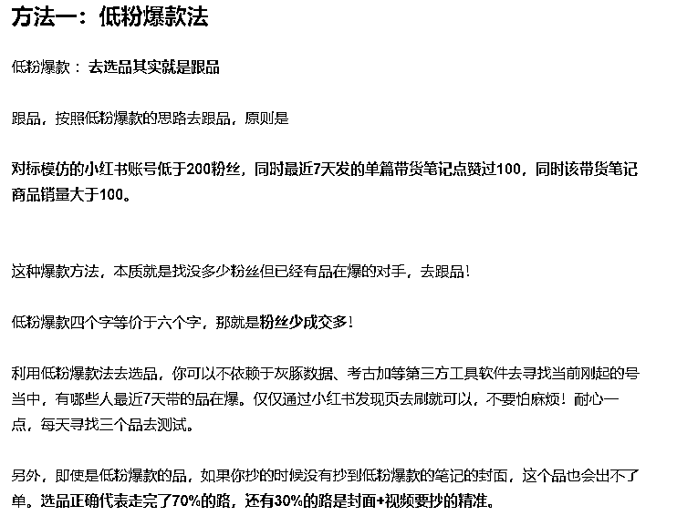
深入了解需求，我们抓取的商品要是 销售量>100，并且粉丝数量<200的
我们先在自己的手机里面试着手动抓取商品链接，
1.打开小红书app
2.点击左下角的购物按钮，会出来商品链接
3.点击商品链接，查看销量
如果销量>100，点击店铺图标，查看粉丝数量，如果粉丝数量<200 就返回记录商品链接
如果粉丝数量>200 就返回到购物页面，点击下一个商品链接
如果销量<100，直接返回购物页面，点击下一个商品链接
制作流程图，有助于我们理清自己的思路，方便我们在写代码的时候思路更清晰，不会乱！
可以把每个部分制作成子流程，方便优化代码的时候方便查看，编辑，这些要养成习惯
如果有遇到报错，等异常代码，也更方便修改！
来自官方文档：https://www.yingdao.com/yddoc/topic-basedDoc/a5c87b1d3996d052c4d24649863a4e9d.html?
第一步：打开影刀首页的设置中心
第二步：点击 ⌈ 自动化插件 ⌋ 中的 ⌈ Android 自动化组件 ⌋
第三步：点击之后，手机管理器打开后会自动检测当前机器是否已安装自动化环境。未安装则会提示用户安装，若已安装，且手机已开启调试模式，会自动连接当前手机
第四步：点击"立即配置"
第五步：等待环境安装成功
第六步：安装成功后，会自动启动内置安卓自动化组件。同时影刀管理器进入扫描设备状态。只要将开启调试模式的通过数据线连接电脑即可连接
来自官方文档：https://www.yingdao.com/yddoc/topic-basedDoc/7dc8582d60cea069e994d96d84531ea6.html?
我使用的手机是 小米9A
1.手机开启开发者模式
2.手机开始USB调试，数据线连接电脑之后选择文件传输
具体可以看这个官方文档里面的视频：
电脑端和手机端的环境都配置完了之后，尝试在影刀的手机配置器里面连接
第一次连接他会自动下载影刀的插件，一直点同意就可以了！
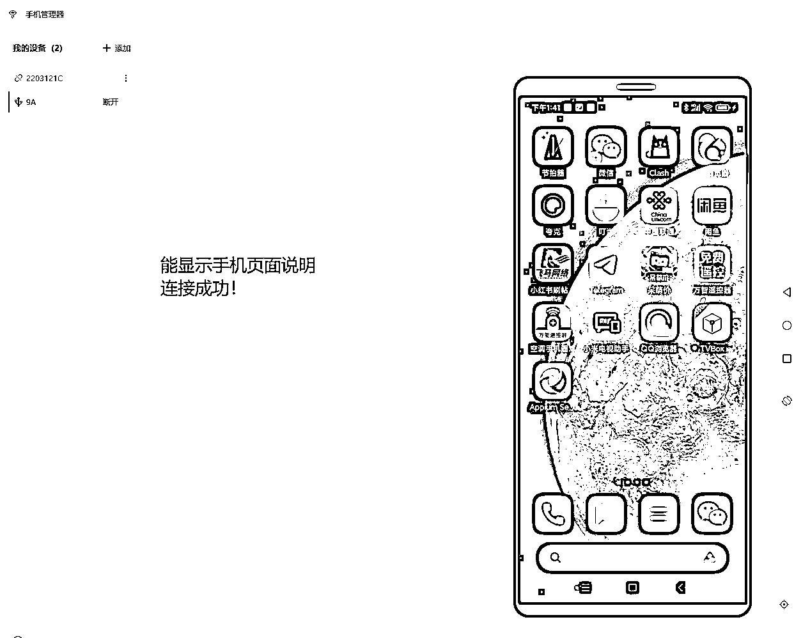
如果你想更快掌握影刀手机脚本，推荐观看这个官方视频：
影刀RPA中级课程：12 手机自动化：
https://www.bilibili.com/video/BV1Zk4y1w7HA/?spm_id_from=333.337.search-card.all.click&vd_source=14a3ed1caf691b990c61aad056f9fc03
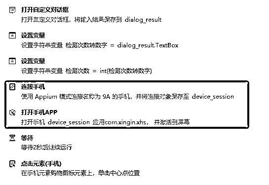
只有保证这步能正常执行，才能执行接下来的所有步骤！
如果这步没有搞定的话，就去重新看上面的官方文档，如果自己实在搞不定，也可以联系官方人员远程帮你操作！
我刚开始测试模拟器连接，一直都不行，也可以联系官方人员帮忙处理的！
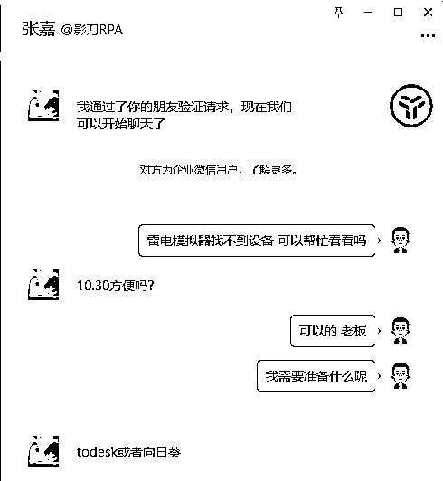

连接手机之后，第一步打开小红书APP
直接使用 打开手机APP的命令，具体配置如下

如果APP包名那边是空的，在影刀手机管理器里面打开小红书app，这里点击右边的获取就可以获取到了！
打开小红书app之后还需要点击购物按钮，才能跳转到商品链接
我们使用：
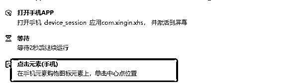
这里的购物图标元素，直接捕获元素就可以直接捕获了比较简单！
这里加了一个等待2秒的动作，是因为有时候手机比较卡，打开小红书账号页面还是空白的，所以加2秒的等待
至此，我们流程图的第一部分已经搞定了！是不是很简单

首先需要获取到我们要找的商品链接
直接使用 获得相似元素列表(手机) 就行！这个也比较简单.获取到的列表我们自定义名称为：商品链接_element_list，也可以使用别的名称，只要方便自己记就行，养成好习惯！
然后使用 循环相似元素(手机） 依次点击我们获取到的商品链接，在单独在商品链接页面内进行判断销量和粉丝数量！
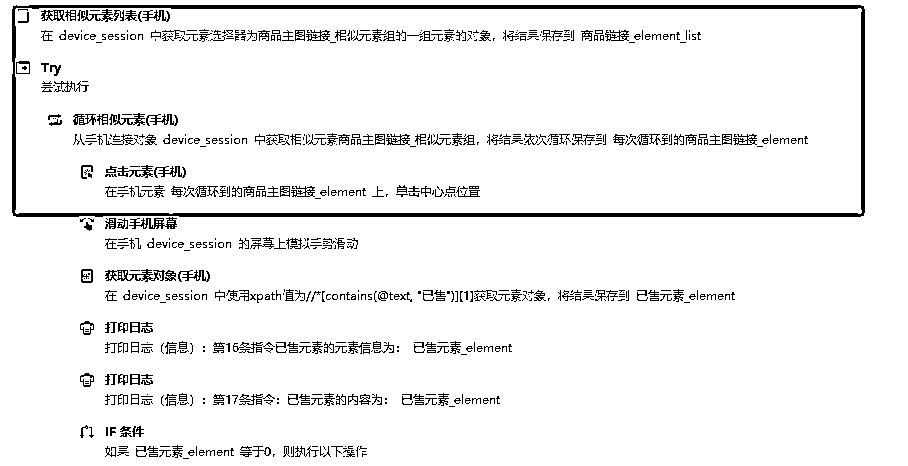
第三部分也是比较关键的部分，我们的核心代码都在这边，我们要点击到商品链接之后
依次判断 销量和粉丝数量！
注意！！！注意！！注意！！：
这个时候我们需要捕获很多元素，包括返回，分享，微信图标等等！
这里有两个元素需要注意，我们使用直接捕获是捕获不到的，或者捕获到了换了一个商品链接就没办法校验了
所以我们需要使用Xpath定位，我这个也是现学的，看完视频，马上测试就成功了！在我们这个流程中也不难
官方教学：
https://www.bilibili.com/video/BV1Zk4y1w7HA?p=7&vd_source=14a3ed1caf691b990c61aad056f9fc03
这两个元素分别是:
已售数量的元素：//*[contains(@text, "已售")][1]

粉丝数量的元素：//[contains(@text, "粉丝")]/preceding-sibling::

注意，元素的定位方式要选择：Xpath！
这样我们就捕获到了我们所需要的所有元素，总的元素很少，这里我有一些还重复了！
接下来只要根据我们的流程图，一步一步走就可以了！
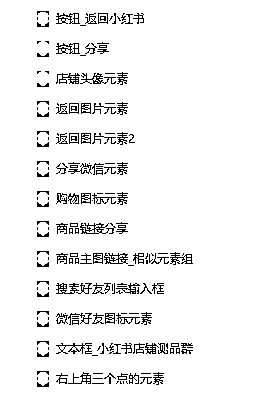
我们首先观察流程图，我们要做的就是先判断已售的数量
在第二部分结束的时候，这个时候我们的手机页面已经进入了一个商品链接，
因为我们又已经获取到了已售元素，所以我们直接获取已售元素的文即可
使用命令：获取手机元素信息

注意：
我们这个时候获取到的元素的文本内容大概是：已售4.4万 或者 已售328
有两种形式：
一种带【万】字的，
一种没有带的！
1.判断 已售数量元素 有没有【万】字！
如果有【万】字，我们把元素的 数字部分记录下来 *10000 就是具体的销售额
如果没有【万】字，我们直接获取元素的 数字部分，就是我们的销量！
具体代码如下：


这样我们就判断完了已售数量：
接下来的思路根据流程图走：

如果销量>100，我们通过我们模拟手机抓取过程发现
我们可以点击左下角的店铺图标，这个时候我们就可以看到粉丝数量，并且获取到！
具体代码如下：
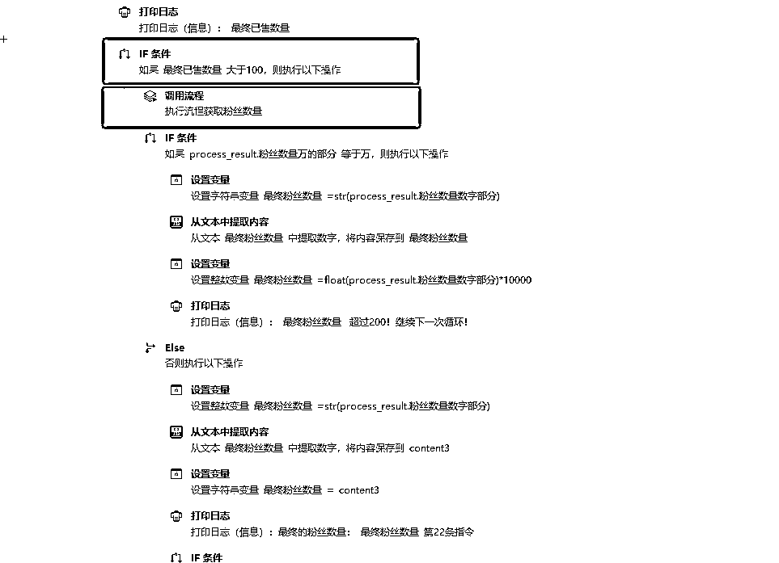
因为这里要获取粉丝数量，但是这个时候代码现在太杂了
我把获取粉丝数量单独弄成一个子程序，拿来调用！
B获取粉丝数量子程序代码如下：

这个时候，获取粉丝数量子程序就会返回对应店铺的粉丝数量！
这个时候我们要注意，跟已售一样
我们获取的粉丝数量也有两种形式：
一. 2.8万
二. 3266
这样两种类型，我们也要分别对这两种进行判断
判断的依据是，文本里面是否带【万】字
有的话: 数字部分*10000
没有的话: 最终粉丝数量=数字部分
这个跟已售一样，不多做赘述！
根据流程图的思路走：
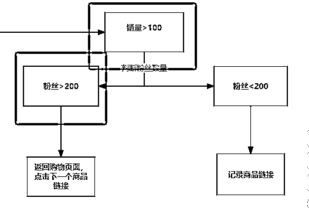
由于上面已经判断了已售数量是>100，并且我们获取到了粉丝的数量：
这个时候我们只需要判断粉丝的数量即可：
如果粉丝数量>200
因为我们这个时候点进店铺头像，是个人主页的页面
我们需要返回上一个页面，就是商品链接页面
点击右上角三个点，点击分享到微信
分享到我们设定好的微信好友或者微信群聊！
具体代码如下:
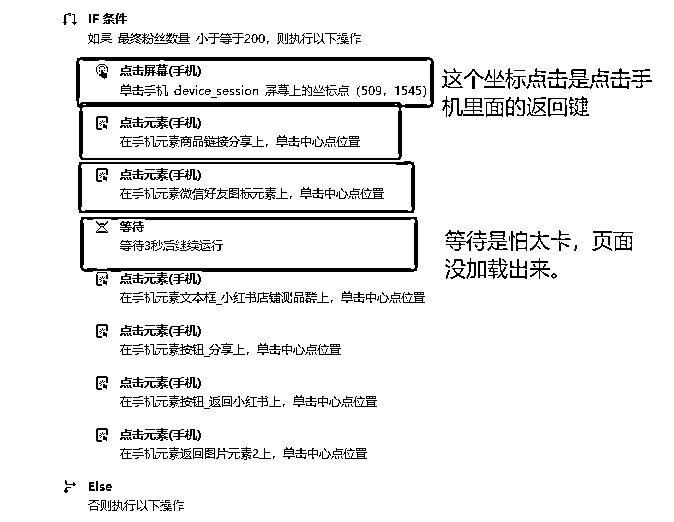
如果粉丝数量<200，我们直接就返回商品主页面
注意，这个时候我们进入的是个人主页的页面
我们需要点击两次返回
一次返回到商品连接页面
第二次返回到购物主页面
这样才能保证能继续点击下一条链接
如果销量<100,根据我们构建这个脚本的想法，我们直接不要，并且返回到购物主页面，
中间要用到返回，使用点击屏幕或者点击元素都可以！
准备点击下一个商品链接！

具体代码如下：
注意:中间的点击屏幕，是点击我手机里面返回键的位置
因为我们我们发现已售数量<100，这个时候还在商品链接里面，
这个时候想要点击下一个商品链接，需要先返回，才能获取到下个商品链接，不然会报错！
这个代码是 IF 代码，
我把销量>100 写在IF里面
所以这里 销量<100，我写在else里面
以上核心代码写完之后，我们已经可以开始简单的运行
1.检测脚本是否正常
2.检测脚本会不会报错，如果有报错，就记录报错的原因
3.脚本能正常运行，但是一直循环等等
分享几个我前几版遇到的问题，并且是如何解决的。
如果你刚好也遇到了，可以直接解决！
注意！！注意！！注意！！
每次运行能正常，但是要加代码的时候切记一定要备份了在备份那边写
我这个也备份了好几个版本，就怕哪里改了 就出错 改不回来了！

报错1：匹配到多个元素, 无法唯一定位
这个我遇到的是 已售元素 匹配到多个元素，绝大多数商品都正常的，但是其中一个商品有两个 已售元素
解决方法是：//*[contains(@text, "已售")][1]
在最后加[1]表示获取前面一个！
报错2：循环的时候下标超过最大值：
这个时候看看是哪条指令错误，检查对应的指令是哪个元素，
我遇到最多的就是商品链接 提示这个
原因为：手机页面卡在个人主页页面或者店铺页面，获取不到商品链接，所以报错！
解决方法是：增加放回到购物页面动作
报错3：商品没有已售，销量为0，脚本获取不到

直接在 获取元素对象(手机)里面设置，并且加上代码
如果已售数量=0，直接进行下一次循环！

报错4：商品主图太长，获取不到 已售元素，
解决方案：增加 屏幕上滑动作
我的手机坐标大概是：
小米9a手机可以参考!
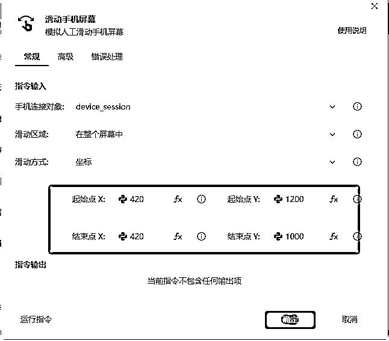
别的基本没有什么大问题了，有的话都是很简单的，自己就能解决！
可以固定次数或者无限抓取
注意：
我这边无限循环使用的操作是上滑！
就是获取一组商品链接完了之后，上滑刷新，获取新的商品链接
下滑也可以，但是下滑可能会重复，所以我设置的上滑
也可以设置成，通过关键词抓取对应类目的商品链接，这个我有空了会做出来！
一些报错都解决完了之后，就可以在整个循环代码外面增加一个 无限循环 命令，并且设置循环次数
这里可以用到全局变量
设置一个全局变量拿来当作循环的次数
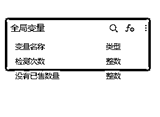
具体代码如下：


并且设置一个自定义对话框，可以选择自己要抓取的次数！


设置好退出循环的条件，这样就可以固定次数或者无限次数抓取
也可以设置定时运行，每天定时或者设多少分钟定时获取等等！
定时运行在影刀主页面的触发器里面：
可以根据自己的需求设置:
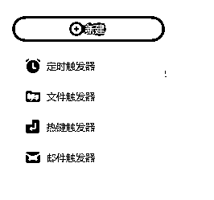
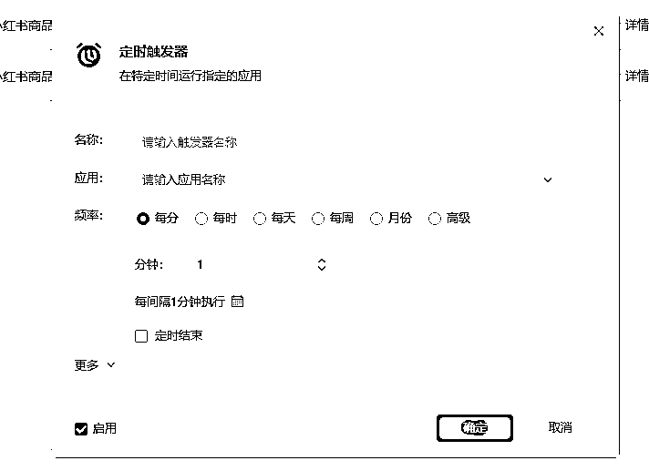
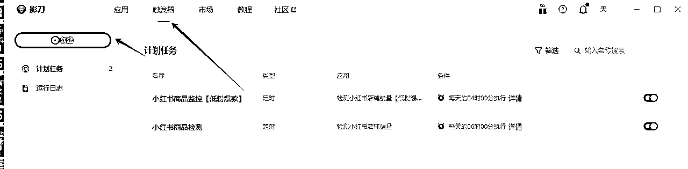
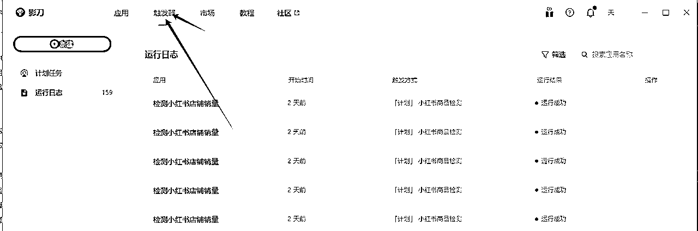
推荐观看影刀官方视频：
影刀RPA中级课程：03 异常处理
https://www.bilibili.com/video/BV1Uh411u72J/?spm_id_from=333.999.0.0&vd_source=14a3ed1caf691b990c61aad056f9fc03
我这个脚本里面的异常处理主要是使用
Try命令和Catch命令
简单解释： Try命令和Catch命令
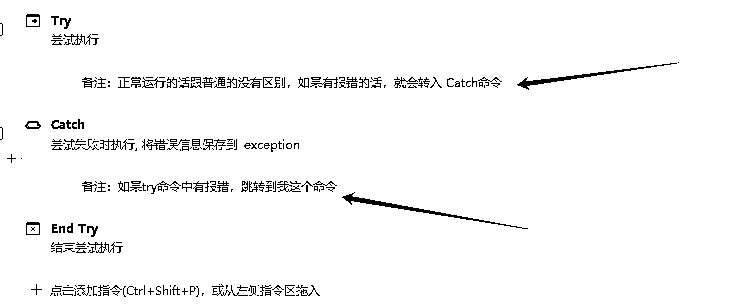
如果脚本正常运行的话 ，这段代码就跟没有一样
如果try里面的代码报错了，就会转入Catch命令！执行里面的代码！

所以我点击了两次返回，并且进行上滑刷新动作！

影刀RPA适合有很多重复性的动作，我学习影刀的初衷也是希望自己平常的工作中也可以用到上.
今天讲的思路适合做很多平台，包括抖音，视频号等等
这几天刚好给自己写了这个脚本，希望这个分享对你有帮助！
本人刚开始做小红书电商，如果你喜欢影刀RPA或者正在做小红书电商·
希望可以多交流！
本次代码中也有很多不足的地方，有影刀大佬的话可以多多指教！
往期跟RPA有关的文章：
1.思路来源于：https://articles.zsxq.com/id_xwveu3e0usfv.html 书豪的文章【小红书单店铺单月6000+利润选品保姆级教程】
2.影刀配置电脑端环境：
来自官方文档：https://www.yingdao.com/yddoc/topic-basedDoc/a5c87b1d3996d052c4d24649863a4e9d.html?
3.影刀配置手机端环境：
https://www.yingdao.com/yddoc/topic-basedDoc/7dc8582d60cea069e994d96d84531ea6.html?
4.影刀RPA中级课程：12 手机自动化：
https://www.bilibili.com/video/BV1Zk4y1w7HA/?spm_id_from=333.337.search-card.all.click&vd_source=14a3ed1caf691b990c61aad056f9fc03
5.Xpath定位，官方教学：
https://www.bilibili.com/video/BV1Zk4y1w7HA?p=7&vd_source=14a3ed1caf691b990c61aad056f9fc03
6.影刀RPA中级课程：03 异常处理
https://www.bilibili.com/video/BV1Uh411u72J/?spm_id_from=333.999.0.0&vd_source=14a3ed1caf691b990c61aad056f9fc03
本人也是0编程基础学习了几个星期做出来的
代码肯定有不好的地方，有影刀大佬也可以交流一下！
核心流程太长了，
这几天会简化一下，多设置几个子流程
这块自己还不是很熟练，还在学习中
后续可能会出搜索关键词，抓取低粉爆款商品！
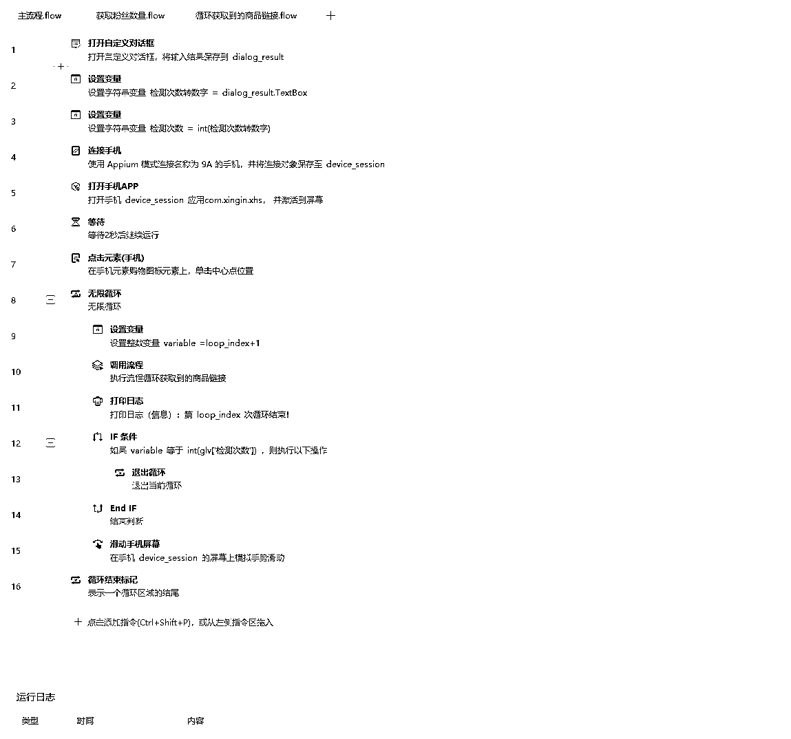
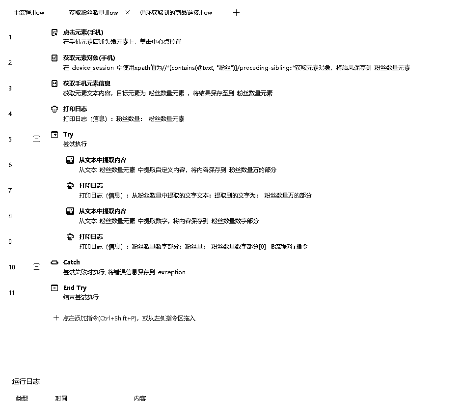
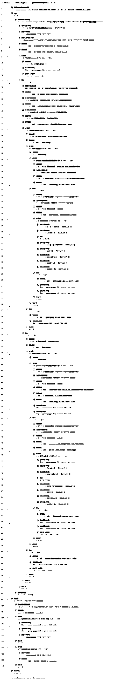